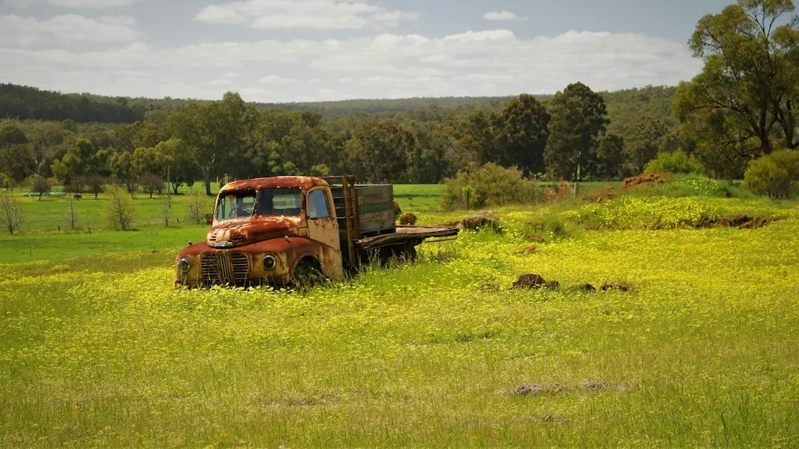

A lasting Perth lawn depends on prepared sand, suitable turf and a reticulation plan. Landscaping West describes roll-on turf laid on prepared sand, repairs for thin or patchy grass, and lawn care for local heat. Fast-draining sand and Perth's two-day watering roster affect shallow roots, so ask how preparation, irrigation coverage and early care will be handled before approving the work.
For homeowners comparing lawn installation perth options, the practical decision is how the ground, turf, watering system and intended use will work together through Perth's sandy soil and heat.
Lawn Installation Perth Explained
Before choosing turf, read Landscaping West's description of Perth yards and consider the conditions that affect establishment: shifting sand, sloping ground, roots lifting paving and water moving towards the low side of a block. The visible grass is only one part of the result. Levels, drainage and the supporting surface influence how the finished area performs.
The published service description refers to roll-on turf laid on prepared sand. Ask what that preparation includes, whether uneven or low areas need attention, and how access will affect the order of work. Trees, paving, retaining walls, narrow side passages and low points should be included in the first site discussion.
When a yard slopes, clarify whether levelling, drainage or retaining work must precede the turf. A lawn quote is easier to assess when those ground conditions are identified before materials are selected.
Match the surface to the yard's use
A front lawn may have different requirements from a back yard used for sitting, play or movement between outdoor areas. Describe the intended use, direct sun, bare sand, thin grass, patchiness and any existing watering problem before comparing surfaces.
Artificial grass is described as being laid over a compacted base for front and back yards that stay green without mowing. Natural turf brings different establishment and watering questions. Ask for each option to be considered against the existing surface, preparation required, drainage and expected maintenance.
The choice can also affect the wider layout. Where lawn sits beside paving, garden beds, shade or an outdoor living area, ask how levels and transitions will be handled. The Perth landscape design guide offers a companion view of how lawn fits within a larger yard plan.
Work watering into the installation sequence
Perth sand drains quickly, so water from a two-day roster can move below shallow roots. Ask how sprinkler coverage will reach the full lawn, including edges, and whether existing dry spots or missed areas need correction before new grass is installed.
The described reticulation work includes new installations, upgrades, repairs, leaks and sprinklers that miss parts of the garden. Those faults should be discussed while the surface is still being planned. The source guidance describes testing the reticulation before the lawn goes down, which gives the installer an opportunity to identify coverage problems before the turf is in place.
Adjacent garden beds may need a different watering approach. Landscaping West describes splitting reticulation zones according to how thirsty each planting is and grouping native plants by water need. Ask how the lawn zone and nearby planting will be managed together, then clarify what early care the turf requires through Perth heat.
Read the quote as a work sequence
A written price is most useful when it shows what happens before, during and after installation. Include the yard's ground fall, access conditions, nearby structures, paving, trees and any irrigation fault in the initial description.
Ask whether preparation, turf or artificial grass, soil, reticulation, removal, edging and associated structures are identified separately. Landscaping West's published FAQ recommends checking what the written price covers and making preparation, materials, plants, reticulation and structures visible. This helps reveal whether the main cost sits in the lawn itself or in the work needed to make the site ready.
Clarify how changes will be handled if the ground differs from the first description. If a retaining wall forms part of the project, ask who will address local council approval, because the published guidance states that some retaining walls need a building permit before construction starts.
Who this guide applies to
This guide suits Perth homeowners dealing with bare sand, thin or patchy grass, dry spots, a sloping block or a yard that is not being used. It also applies when the decision is between natural roll-on turf and artificial grass, or when lawn work forms part of a project involving paving, garden beds, shade or outdoor living.
It is not a standalone design for a structural retaining wall, major drainage issue or alfresco structure. Those elements can change levels, access and sequencing, so raise them before the lawn scope is fixed. Australian Consumer Law guarantees apply to a landscaping service paid for by the consumer, and the published guidance states that a contract cannot remove those rights.
- Describe the current ground and intended use.
- Ask when reticulation will be checked.
- Confirm any approval question before construction.
- Describe the site. Record whether the ground is sandy, sloping, bare, patchy or affected by dry spots, and explain how the area will be used.
- Check the sequence. Ask how levels, soil, access, edging and any drainage or retaining issue will be handled before the surface is installed.
- Review irrigation. Confirm that sprinkler coverage, leaks, dry areas and the two-day watering roster have been considered before turf is laid.
- Compare the scope. Request a written price that makes preparation, materials, lawn, irrigation and related structures easy to identify.
- Clarify aftercare. Ask what early care is expected and how the installed surface will be checked.
| Option | Question to ask | Planning focus |
|---|---|---|
| Roll-on turf | Is the sand prepared and level? | Soil, levels and watering |
| Artificial grass | What compacted base is included? | Base, falls and drainage |
| Existing lawn repair | What caused the patchiness? | Reticulation and surface condition |
Common questions
What should be prepared before new lawn is installed? Ask about levels, prepared sand, access, edging and any drainage or retaining issue. Landscaping West describes roll-on turf as being laid on prepared sand, so preparation should appear in the scope.
Why does Perth sand affect lawn watering? The published guidance says Perth sand drains fast, allowing water from a two-day roster to move past shallow roots. Ask how coverage and establishment will be managed.
Should I choose natural turf or artificial grass? Compare the preparation and watering requirements of natural turf with the compacted-base requirements of artificial grass. The suitable choice depends on how the yard will be used and maintained.
How long will the project take? Timing depends on the yard size and work involved. Lawn work can be quicker than levelling a slope, building a retaining wall or adding an alfresco area, while a required permit can affect the start.
What should a lawn quote include? Ask for preparation, materials, lawn, reticulation, removal, edging and structures to be identified clearly. Include access, slopes, nearby paving and existing irrigation problems in the first description.
This guide covers lawn selection, ground preparation, watering, quoting and project questions for Perth yards.